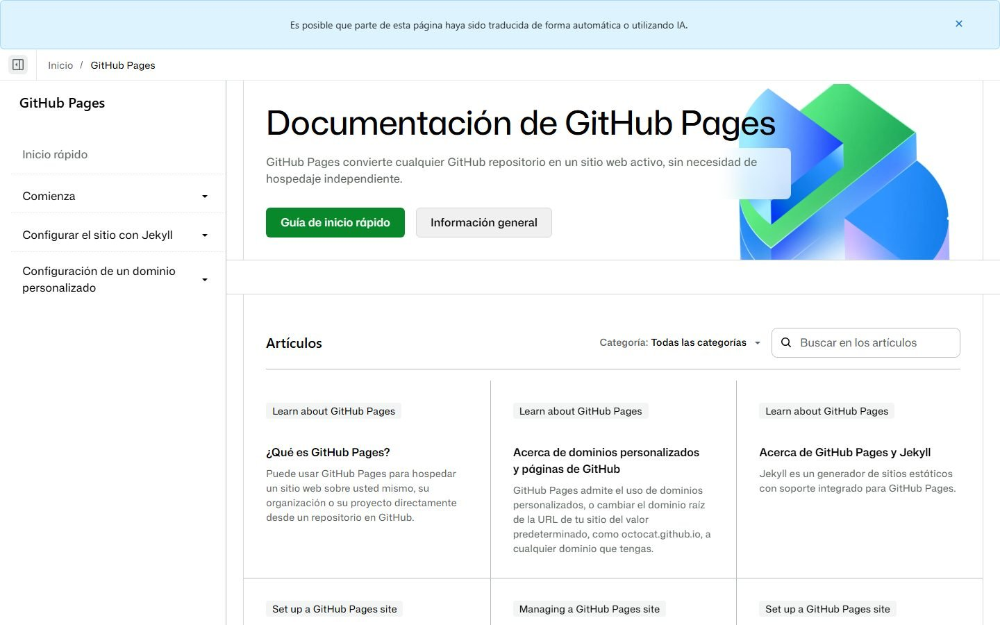

Publicar · 30 min
Lo que viste en directo: una carpeta con la web, un script de diez segundos y GitHub Pages. Gratis y sin depender de nadie.

Sube una carpeta con archivos HTML (y zips, PDFs) a un repositorio público de GitHub y activa GitHub Pages. La dirección queda https://TU-USUARIO.github.io/NOMBRE/. Es donde vive esta web.
git instalado con tu sesión iniciada (así el script coge el token solo, sin pegar claves).Una carpeta out con index.html y lo que quieras servir. Si le pides a Claude "hazme una página con esta guía y un botón de descarga", te la escribe. Pídele fondo oscuro, letra grande y que funcione en el móvil.
Guarda esto como publicar.py junto a la carpeta out y cambia REPO:
import subprocess, json, base64, urllib.request, os, hashlib
REPO = "nombre-de-tu-web"; OUT = "out"
cred = subprocess.run(["git","credential","fill"], input="protocol=https\nhost=github.com\n\n", capture_output=True, text=True).stdout
tok = dict(l.split("=",1) for l in cred.strip().splitlines() if "=" in l)["password"]
H = {"Authorization":"Bearer "+tok, "Accept":"application/vnd.github+json", "User-Agent":"deploy"}
def api(m, p, d=None):
r = urllib.request.Request("https://api.github.com"+p, method=m, headers=H, data=json.dumps(d).encode() if d is not None else None)
try:
with urllib.request.urlopen(r) as x: return x.status, json.loads(x.read() or b"{}")
except urllib.error.HTTPError as e: return e.code, json.loads(e.read() or b"{}")
user = api("GET","/user")[1]["login"]
api("POST","/user/repos",{"name":REPO,"private":False,"auto_init":False})
st, tree = api("GET",f"/repos/{user}/{REPO}/git/trees/main?recursive=1")
remote = {t["path"]:t["sha"] for t in tree.get("tree",[]) if t["type"]=="blob"} if st==200 else {}
for r,_,fs in os.walk(OUT):
for f in fs:
rel = os.path.relpath(os.path.join(r,f),OUT).replace(os.sep,"/"); data = open(os.path.join(r,f),"rb").read()
if remote.get(rel) == hashlib.sha1(b"blob %d\0" % len(data) + data).hexdigest(): continue
body = {"message":rel,"content":base64.b64encode(data).decode(),"branch":"main"}
if rel in remote: body["sha"] = remote[rel]
print(rel, api("PUT",f"/repos/{user}/{REPO}/contents/{rel}",body)[0])
if api("GET",f"/repos/{user}/{REPO}/contents/.nojekyll")[0] != 200: api("PUT",f"/repos/{user}/{REPO}/contents/.nojekyll",{"message":"pages","content":"","branch":"main"})
st, r = api("POST",f"/repos/{user}/{REPO}/pages",{"source":{"branch":"main","path":"/"}})
print("URL:", f"https://{user}.github.io/{REPO}/")
python publicar.py. La primera vez GitHub Pages tarda entre uno y diez minutos en servir la página; las siguientes, uno o dos. Por eso en la charla la portada se publicó el día antes y en directo solo se subió el contenido.
Con Python: pip install qrcode[pil] y
import qrcode; qrcode.make("https://TU-USUARIO.github.io/NOMBRE/").save("qr.png")
O pídeselo a Claude: "genera el QR de esta URL en PNG, fondo negro, módulos blancos".
En el CLAUDE.md de la carpeta: Cuando diga "publica la web", ejecuta python publicar.py y responde con una línea: la URL y "publicado".
Es gratis, no caduca, y no depende de un proveedor que un día bloquee tu dominio. Si usas un dominio propio, apúntalo con DNS al repositorio.
Semana de la IA 2026 · Cluster TIC Asturias · 25 de septiembre · Adrián Nicieza, edrian.exe · contacto@edrianexe.com · @edrian.exe
Contenido generado con ayuda de IA y revisado por un humano. Datos de la tienda de ejemplo, simulados.